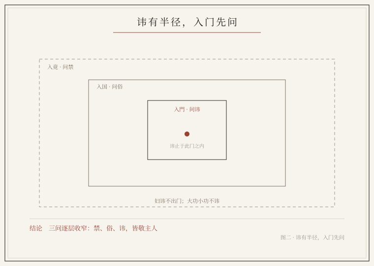

曲礼上 · 一·一百一十三 · 第 111 课
君夫人家的讳，臣在君前对答也不必避；妇人之讳不出家门；大功小功之亲不讳。末以三问收：入境问禁，入国问俗，入门问讳。
说什么事：夫人之讳，虽质君之前，臣不讳也；妇讳不出门。大功小功不讳。入竟而问禁，入国而问俗，入门而问讳。
落在哪一层：制，兼及礼意。讲的是「讳的半径」。
为何编在此位：上节论讳之层位，此节论讳之界域，由内而外，收于入门一问。
【经】夫人之諱，雖質君之前，臣不諱也；婦諱不出門。大功小功不諱。入竟而問禁，入國而問俗，入門而問諱。
【注】臣於夫人之家，恩遠也。質猶對也。婦親遠，於宮中言辟之。皆為敬主人也。禁謂政教，俗謂常所行與所惡也。國，城中也。
质 注「质犹对也」。面对面答话。
夫人之讳 君妻本家之讳。注「臣于夫人之家，恩远也」。
妇讳不出门 注「妇亲远，于宫中言辟之」。疏「门谓妇宫门……若于宫外，则不讳也」。
大功小功 丧服之轻者。疏「古者期亲则为讳」；「大功以下关系较为疏远，故不讳」。
竟／国／门 疏「竟，界首也」；「国，城中」；「门，主人之门也」。
问讳以门为限 疏「主人出至大门外迎客，客入门，方应交接，故于门为限也」。
国君夫人家族的讳，即使当着国君的面答话，臣也不必避；妇人的讳不出家门。大功、小功之亲不避。进入国境先问禁令，进入城中先问风俗，进入人家门先问忌讳。
一节四句，讲一个「范围」：讳随亲而远近，随门而内外。最后三问，把避讳从家内之事，变成入门的第一句客气话。
第一层 恩远则不讳 注于夫人之讳只说「恩远」。礼的一切分别，最后都落回一个「恩」字。
第二层 妇讳不出门 门是界限。门内避，门外不避。这个界限划得极实用：既全了家里的敬，又不让外人陪着小心翼翼。
第三层 大功小功不讳 亲尽则讳尽。避讳不是越广越孝，广到无亲，就只剩形式。
第四层 入门而问讳 注「皆为敬主人也」。三问的第一句不是问禁、不是问俗，而是问讳——因为忌讳最容易无意犯，也最容易被记住。
与今日何干 到别人家、别人的场，先问一句「有什么忌讳」。这一问比任何礼物都省事，也比任何礼物都到位。
| 左 | 右 |
|---|---|
| 夫人之讳，臣不讳 | 恩远于夫人之家 |
| 虽质君之前 | 当面对答亦不避 |
| 妇讳不出门 | 宫中避之，门外不避 |
| 大功小功不讳 | 亲尽则讳尽 |
| 入竟问禁 | 敬其政教 |
| 入国问俗 | 敬其常行与所恶 |
| 入门问讳 | 敬主人祖先之名 |
画三重由外到内的界线：最外一道是断续的国境界线，线旁一枚指路的小石；中段是一圈城墙轮廓，墙内有一条弯曲的巷路；最内是一道门槛，门槛内侧地面上有一小片被遮的字痕、外侧地面干净无痕。三重线之间各留空白，不画人、不写文字。赭色只用在门槛那一道横木上。
